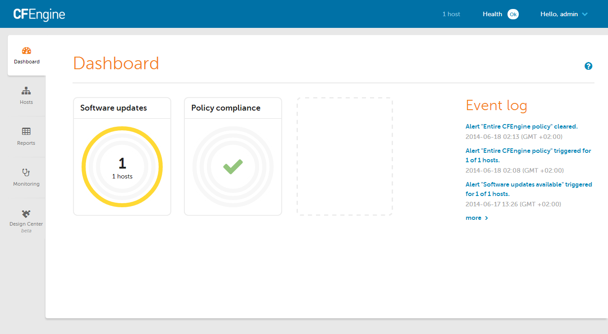
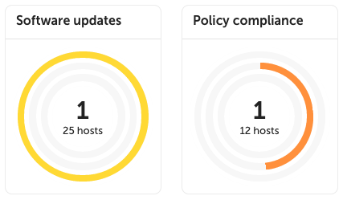
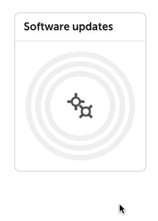
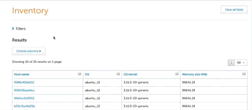

User Interface
The challenge in engineering IT infrastructure, especially as it scales vertically and horizontally, is to recognize the system components, what they do at any given moment in time (or over time), and when and how they change state.
CFEngine Enterprise's data collection service, the cf-hub collector, collects, organizes, and stores data from every host. The data is stored primarily in a PostgreSQL database.
CFEngine Enterprise's user interface, the Mission Portal makes that data available for high level reports or alerts and notifications. The reports can be designed in a GUI report builder or directly with SQL statements passed to PostgreSQL.

The Mission Portal also allows authorized infrastructure engineers to quickly and easily modify any group of machines through the Design Center toolchain, which uses a data-driven policy template mechanism called sketches.
Hosts and Health
CFEngine collects data on promise compliance, and sorts hosts according to 3 different categories: erroneous, fully compliant, and lacking data.
Find out more: Hosts and Health
Alerts and Notifications
The dashboard contains informative widgets that you can customize to create alerts. All notifications of alert state changes, e.g. from OK to not-OK, are stored in an event log for later inspection and analysis.

Alerts can have three different severity level: low, medium and high. These are represented by yellow, orange and red rings respectively, along with the percentage of hosts alerts have triggered on. Hovering over the widget will show the information as text in a convenient list format.

You can pause alerts during maintenance windows or while working on resolving an underlying issue to avoid unnecessary triggering and notifications.

Alerts can have three different states: OK, triggered, and paused. It is easy to filter by state on each widget's alert overview.
Find out more: Alerts and Notifications
Reporting
Inventory reports allow for quick reporting on out-of-the-box attributes. The attributes are also extensible, by tagging any CFEngine variable or class, such as the role of the host, inside your CFEngine policy. These custom attributes will be automatically added to the Mission Portal.

You can reduce the amount of data or find specific information by filtering on attributes and host groups. Filtering is independent from the data presented in the results table: you can filter on attributes without them being presented in the table of results.

Add and remove columns from the results table in real time, and once you're happy with your report, save it, export it, or schedule it to be sent by email regularly.

Find out more: Reporting
Find out more about writing your own inventory modules: Inventory modules
Monitoring
Monitoring allows you to get an overview of your hosts over time.
Find out more: Monitoring
Design Center UI
The Design Center UI allows authorized infrastructure engineers to configure, deploy, and monitor data-driven policy templates known as sketches.
Find out more: Design Center
Settings
A variety of CFEngine and system properties can be changed in the Settings view.
Find out more: Settings